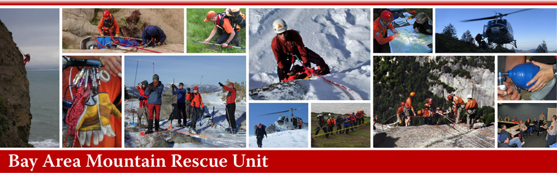
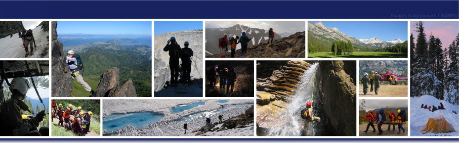

Information & Calendar
BAMRU is a volunteer wilderness search and rescue team
specialized for operations involving difficult terrain, challenging
weather conditions, or high altitude. We are based in the
San Francisco Bay Area and operate throughout California.
